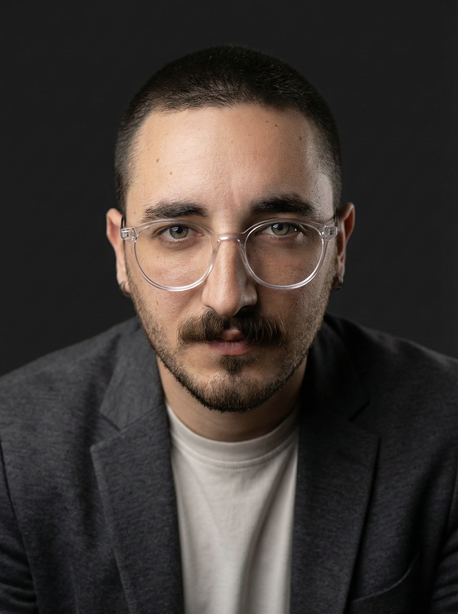

Furkan Sade Uckun
Software Developer

I moved from dentistry into software deliberately and proved that transition by building real products. I develop CRM systems, operational platforms, AI-assisted products and self-hosted infrastructure, working best where product thinking, system design, performance and fast execution need to move together.
Experience
Software Developer
Multimedia Atelier
I build custom software, CRM systems, management panels and operational platforms that digitize internal workflows and improve efficiency. I work across Go, FastAPI, Next.js and related technologies while also contributing to Linux servers, self-hosted services, CI/CD, performance improvements and production issue resolution.
Backend Developer
isTechSoft Software
I built backend systems with Node.js, MongoDB and Express.js for healthcare and academic software products. I contributed to API design, data modeling, reporting flows and structured data processing under a short delivery window.
Projects
Company Management Platform
I led a two-person team and built a self-hosted operations platform used daily by around 20 people, replacing Trello, Jira, Clockify, Google Calendar and manual offer flows with one system. I owned product flows, database planning, rollout and infrastructure while adding real-time work tracking, PDF offer/leave documents, OTP access, WhatsApp notifications and reporting.
Telemedicine Platform Development
I joined a live patient operations platform in a late delivery stage, quickly adapted to a Laravel codebase and helped the backend team under delivery pressure. I improved stability, refactored API-heavy flows, simplified CRUD-heavy backend logic, optimized PDF generation/download processes and shipped fixes that made the product more reliable in production.
BioVet Insight
I built a prototype AI-assisted decision support platform for veterinary clinics with Go, React and LLM + RAG workflows. The system combined patient management, laboratory tracking and operational workflows, with AI flows designed to help clinicians evaluate patient history and lab findings with faster, more contextual support.
Accessibility-Focused Staff Panel
I led the frontend and Nightwatch E2E surface for a government-linked staff and performance platform. I standardized the Vue frontend architecture, improved keyboard-first accessibility, focus handling and screen-reader-aware flows, and reduced a growing E2E suite from roughly 20-25 minutes to around 8 minutes.
Education
Computer Programming
Ataturk University
I continue formal education alongside production-focused software development, self-study and real project delivery.
Dentistry
Ondokuz Mayis University
I earned a place in dentistry, then made a deliberate shift into software after realizing I wanted to build products, systems and infrastructure long term.
Skills
Engineering
Go, FastAPI, Next.js, Node.js, Express.js, MongoDB, Laravel, API design
Systems
Linux servers, self-hosted services, CI/CD, performance optimization, infrastructure support
Product & Delivery
CRM workflows, operational software, accessibility, AI workflows, problem solving
More
TurkishNative
EnglishA2
AI tools · content creation · developer tooling · distributed systems · practical automation